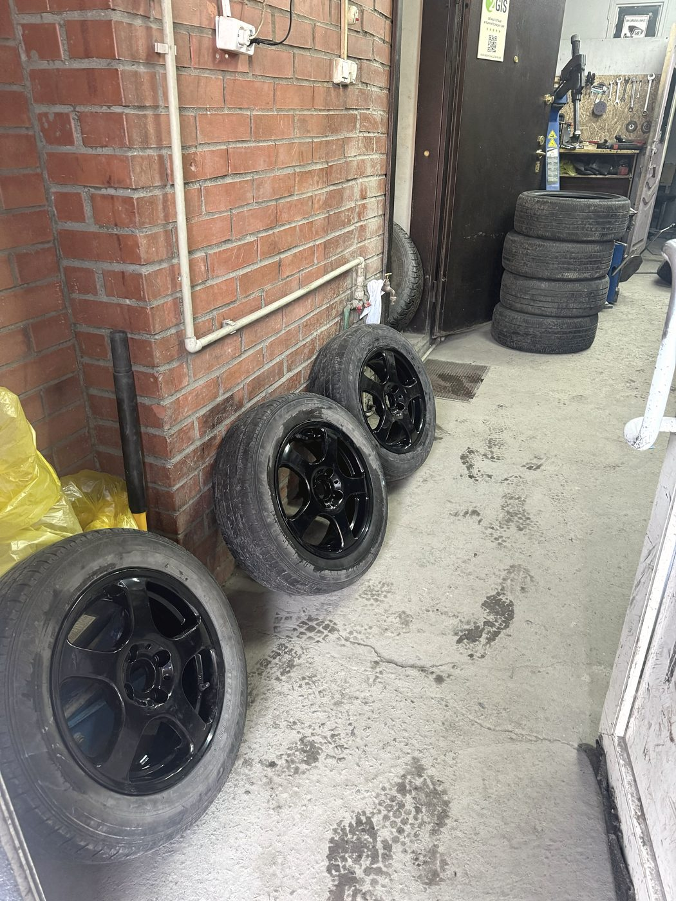
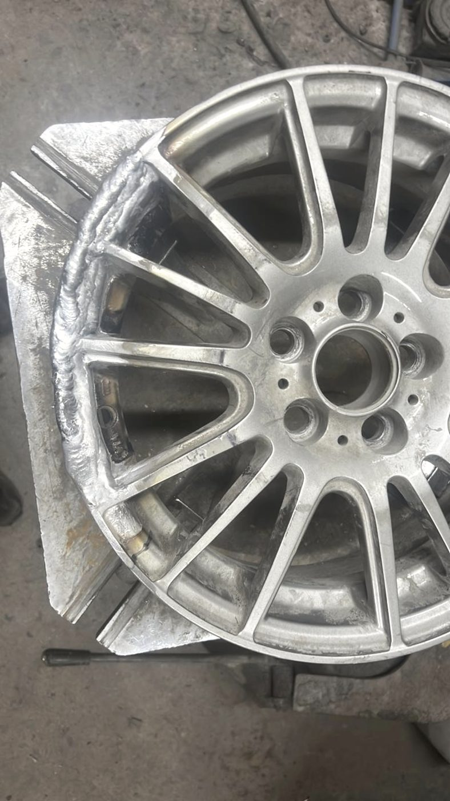
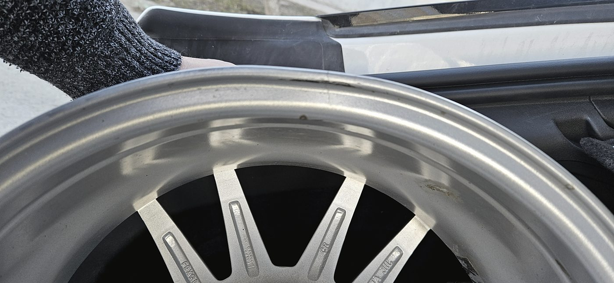
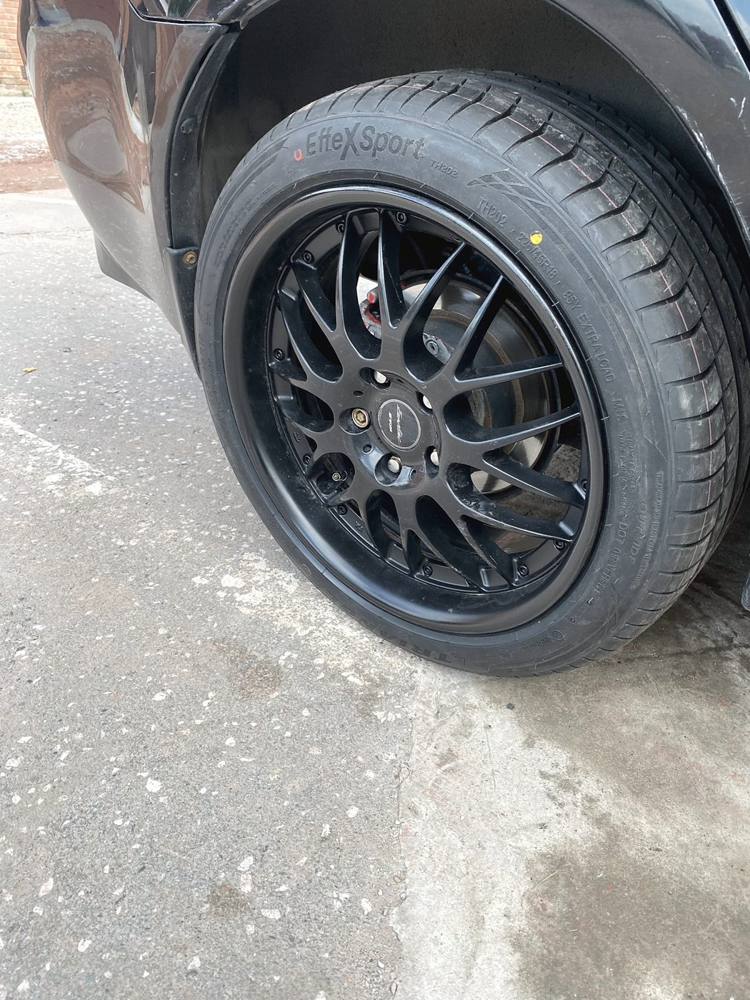
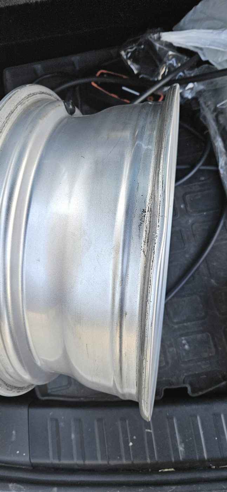
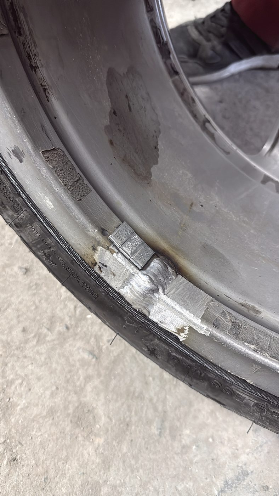
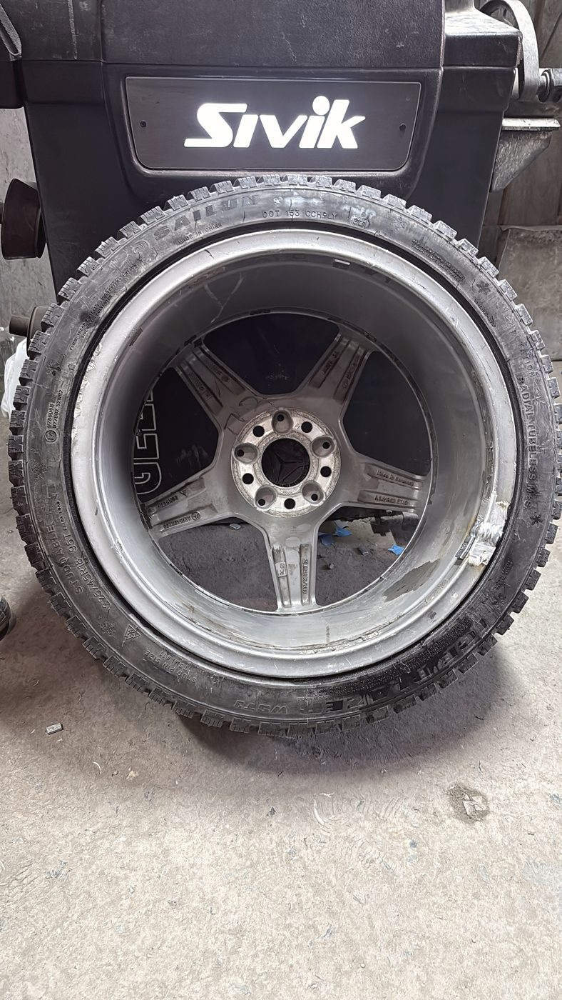
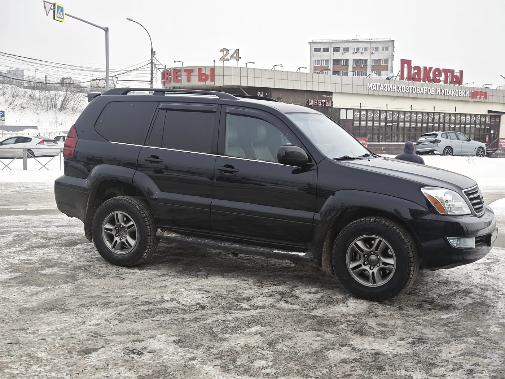
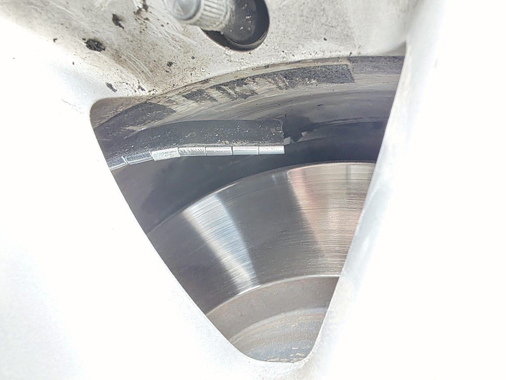
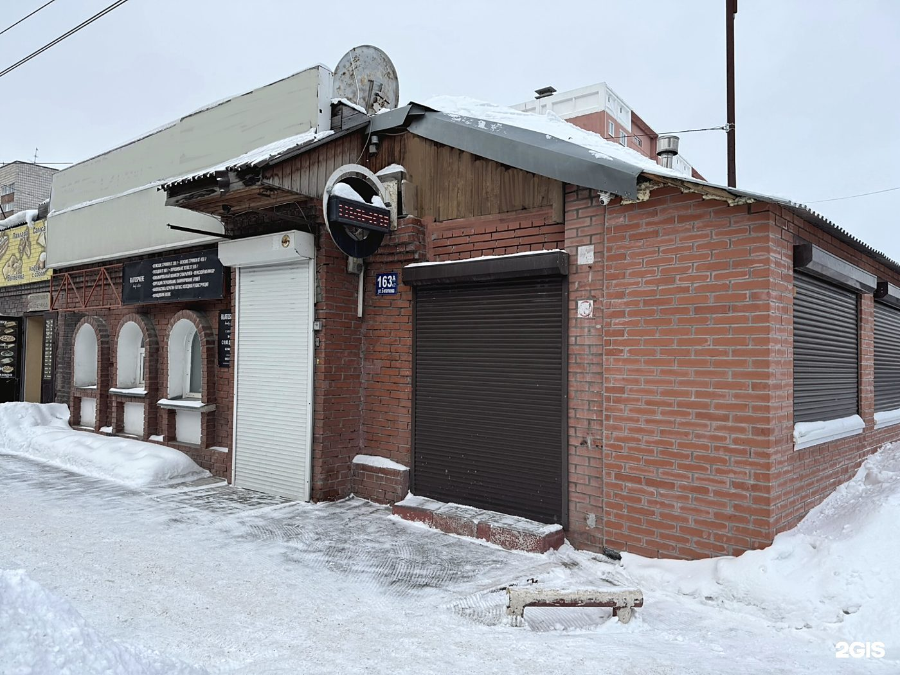

Шинный центр · Бориса Богаткова, 163а к2 · Новосибирск
Диск не выбрасывают.
Диск восстанавливают
Правка после ямы, сварка трещин, полимерная порошковая окраска в любой цвет по каталогу RAL. Плюс полный шиномонтаж — легковой, грузовой и мотоциклетный, наварка шин и хранение комплектов.

Покраска дисков
Цвет выбираете вы —
по номеру RAL
Не «графит или чёрный», а конкретный номер из каталога. Скажите, какой RAL вас интересует, — покрасим в него. Порошок запекается в печи, поэтому покрытие держится лучше, чем обычная краска из баллона.
Двенадцать примеров из каталога RALПолный каталог покажем при заезде
Снимаем старое
Разбортировка, мойка, удаление прежнего покрытия и коррозии до чистого металла.
Готовим и правим
Если есть биение или трещина — сначала правка и сварка, потом уже покраска. Красить кривой диск смысла нет.
Наносим порошок
Полимерный порошок выбранного номера RAL ложится ровным слоем, без подтёков и переходов.
Запекаем в печи
Полимеризация при высокой температуре. Покрытие получается твёрдым и не боится реагентов и щётки на мойке.



Работы
Колёса целиком
Правка и прокатка дисков
Литьё и штамповка после ям. Аккуратно — по отзывам, при правке 18-го диска даже краска не пострадала.
Сварка дисков
Завариваем трещины и сколы, зачищаем шов, проверяем на герметичность.
Полимерная порошковая окраска
Любой цвет по каталогу RAL, запекание в печи. Гарантия на работы — 3 года.
Шиномонтаж
Переобувка, балансировка, ремонт порезов и проколов. Приняли и перед закрытием — если приехали, сделаем.
Наварка шин
Восстановление протектора — заметно дешевле нового комплекта, особенно на грузовых размерах.
Грузовой и мотошиномонтаж
Грузовые шины, мотошины, резина для спецтехники. Не каждый шиномонтаж берётся за такие размеры.
Ошиповка шин
Полная и ремонтная, замена вылетевших шипов перед сезоном.
Мойка и хранение шин
Второй комплект моем и оставляем на складе до сезона. Не нужно везти четыре колеса на балкон.
Продажа, выкуп и аренда
Новые и хорошие б/у шины, выкуп старых, аренда колёс на время ремонта диска.



Гарантия
Три года на работы
Диск — вещь, которую легко испортить, поэтому мы отвечаем за то, что сделали, три года. И честно говорим до начала работ, если шансов спасти конкретный диск немного.
Оцениваем при вас: что можно выправить, что заварить, а что чинить дороже, чем купить б/у. Цену называем сразу.
Звоните — разберёмся и решим вопрос. Претензии по нашей работе закрываются нами, а не спором в отзывах.
Отзывы · 4,6 из 5 по 410 оценкам в 2ГИС
«Заехал выправить 18-й диск. Даже краска не повредилась при выправке»
Алексей Щербаков · 26 июля 2026 · и колёса бесплатно подкачали
Приехал с проблемой, что пробил два колеса, погнул оба диска. Шины заварили, диски починили. Всё отлично, советую.
Alexandr Sledzovsky · 1 августа 2026
Искал, где покрасить диски, и нашёл данное место. Покрасили всё круто и чётко. Цены не кусаются. Мне всё понравилось.
Антон Копытенко · 3 августа 2026



Контакты
Богаткова, 163а к2
Октябрьский район, Новосибирск